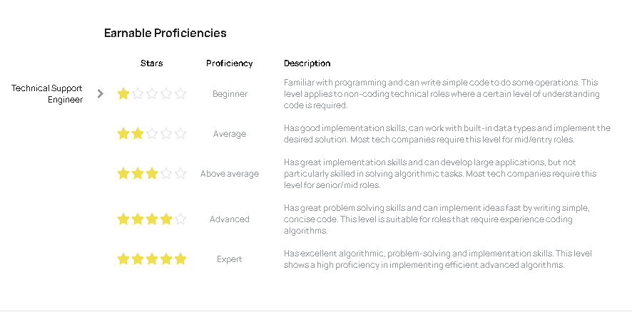

Time: 2 min From:www.educative.io
Linux system administrationis a process of setting up, configuring, and managing a computer system in aLinuxenvironment. System administration involves creating a user account, taking reports, performing backup, updating configuration files, documentation, and performing recovery actions. The user who manages the server, fixes configuration issues, recommends new software updates, and updates document is thesystem administrator.
The Linux operating system was developed by Linus Torvalds in 1991. TheLinux operating systemis an open-sourced system software that manages the computer hardware resources and computing devices. The operating system manages the communication between your application software and hardware resources. Because it is an open source software, it allows the user to have access to its source code, give room for further modification, and allow for further distribution as received.The Linux family is calleddistribution (distro), whereas the Windows operating system is called version.
The Linux operating system contains the following components:
The Linux operating system is used as a client-side (desktop) and server-side operating system.
The Linux operating system offers two types of user interface,CLIandGUI. The CLI is mostly used on the server-side, while GUI is used on the client-side. The interface depends on what the user intends to achieve with the Linux OS.
The Linux OS serves as the backbone for network infrastructure, Cloud computing, web servers, database servers, email servers, and directory service. Each of these servers and services requires a system administrator to manage them.
System administration is carried out by an expert in the IT (Information Technology) industry. The expert ensures that all computing devices and networks work properly. The job demand depends on the kind of system, software application, and work environment.
System administrator allows the administrator to allocate user privileges based on the required resources and function of the user. The system administrator is the most privileged user, known as the_super user_, and determines what computing resources each user receives.
This assessment measures a wide spectrum of coding skillsand makes use of four hands-on coding challenges that you can take in a language of your choice.(Java or Python).
And complexity grows gradually with the remaining tasks. Up to writing clever mini-algorithms where algorithmic efficiency counts
The tasks require nothing more than the common language constructs & functions: no specific libraries or frameworks are required.
Various positions may require different proficiency levels. Your result will not only apply to the current job position but can also unlock many other positions.
